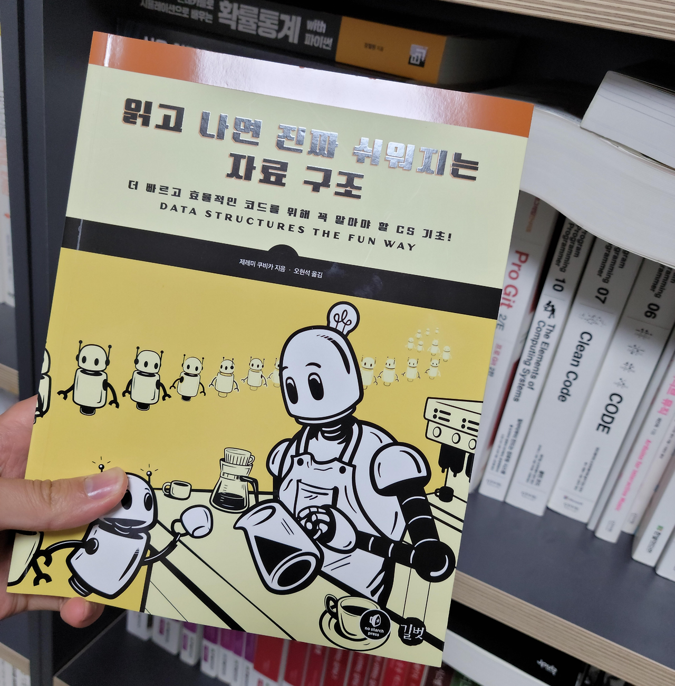

(해당 포스트에서 소개하고 있는 “읽고 나면 진짜 쉬워지는 자료 구조” 책은 한빛미디어로부터 제공받았음을 알려드립니다.)
SW와 관련한 업무를 하는 사람이라면 당연히 프로그래밍을 잘 하고 싶다는 생각을 갖고 있을 것이다. 그러면 프로그래밍을 잘하려면 어떻게 해야 할까? 나도 역시 이에 대한 답을 찾고 있는 중이다. 그래도 가장 효과적인 방법은 그만큼 프로그래밍 관련 서적도 읽고 문제도 풀어보면서 꾸준히 프로그래밍 연습을 하는게 아닐까 싶다. 문제는 프로그래밍이 연관된 주제가 다양하다는 것이다. 가장 기본적인 프로그래밍 언어와 자료구조 내용도 있을 것이고, 혹은 개발에 영향을 줄수 있는 방법론이나 개발 패턴에 대한 내용도 다루게 된다. 또 프로그래밍과 관련이 없더라도 인문학적 소양이나 생물학적 내용도 프로그래밍에 영향을 줄 수 있다. 결국 이 모든 것을 다 아우를 수 있는 똑똑한 사람이 프로그래밍을 잘하는 것 같다. 그래도 나같이 그런게 안되는 사람은 시간은 걸리겠지만 기본적인 내용부터 살펴보게 된다.

이번에 소개하는 “읽고 나면 진짜 쉬워지는 자료 구조” 책도 이런 기본적인 프로그래밍 소양 중 하나인 자료 구조에 대한 내용을 담고 있다. 책의 특징이라면 책에서 설명하는 자료구조의 예시코드가 pseudo code, 즉 언어에 종속되지 않은 일반적인 의사표현 언어로 표현되어 있다는 것이다. 그렇기 때문에 이 책을 읽는 독자가 C++ 개발자이던, Python 개발자이던 상관없이 언어에서 제공하는 기능을 활용하여 의사표현 언어를 구현하면 된다. 물론 구현이 잘 되어 있는 언어는 아예 자체 자료구조가 구현되어 있는 경우가 많기 하지만, 이렇게 책에서 제공하는 부분을 직접 구현하면서 실습해본다면 자료구조 학습에 큰 도움이 되리라 생각한다.
이렇게 의사표현언어로 설명이 이뤄지다 보니, 책내의 예제 코드가 사실 그렇게 많지 않다. 그래서 자료 구조의 동작 방식이나 예시는 그림과 설명이 위주로 구술되어 있다. 그렇기 때문에 오히려 hands-on 방식으로 직접 실습해보면서 학습하는 방법보다는 책의 내용을 조금씩 음미하면서 읽는 것도 좋을 것 같다. 다행히 원서의 출판사인 No scratch press에서 출간하는 “… the fun way”, 굳이 직역하면 재미있게 학습하는 방법을 소개한 책의 특성을 그대로 가져와서 그런지 재미있는 예시들이 소개되어 있다.물론 이 예시들이 해당 절에서 설명하고자 하는 내용을 담고 있어 읽을 때 그렇게 거부감이 들지 않을 것이다.
책에서 다루는 내용은 시중에서 다루는 자료구조 책과 비슷하다. 가장 기본적인 스택이나 큐, 트리 같은 자료구조 내용부터 해서 탐색 관련 내용, 그리고 후반부에는 해시 테이블과 Btree, Bloom filter 같은 내용을 내용을 소개하고 있다. 물론 알고리즘 계의 바이블이라고 할 수 있는 Introduction to Algotirhm에서 다루는 내용의 일부이긴 하지만, 저자는 책에서 추구하는 의도에 맞게 탐색과 자료구조를 잘 엮어서 설명했고, 오히려 그런 부분이 읽기에 좋았던 것 같다.
조금이라고 기본 자료구조에 대해서 어려움을 느끼고 복습하려는 사람에게는 좋은 가이드가 될 책이라 생각한다.